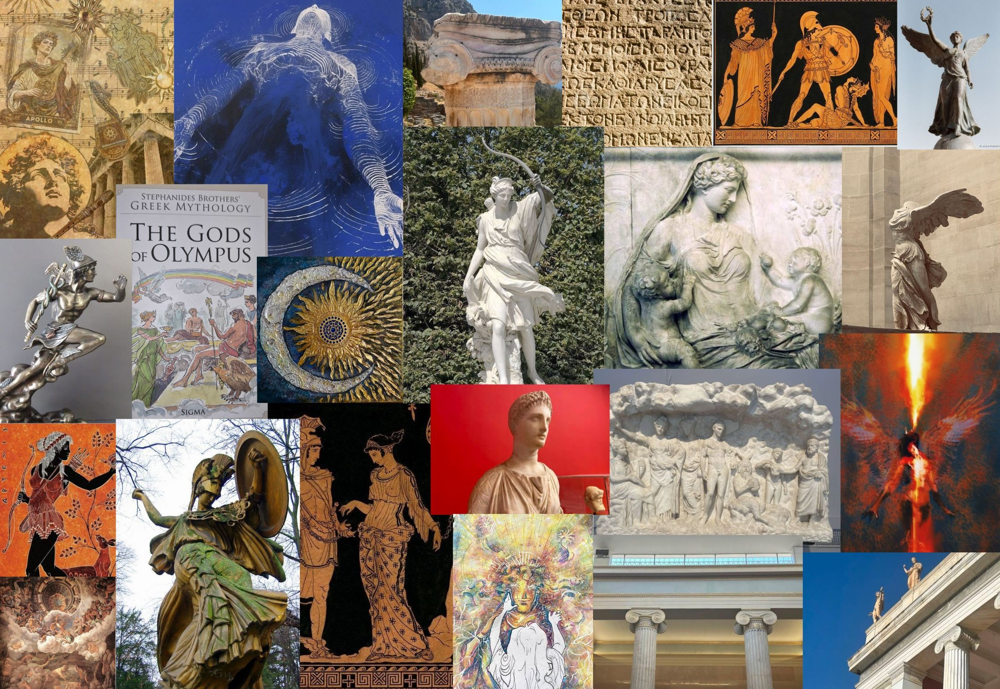
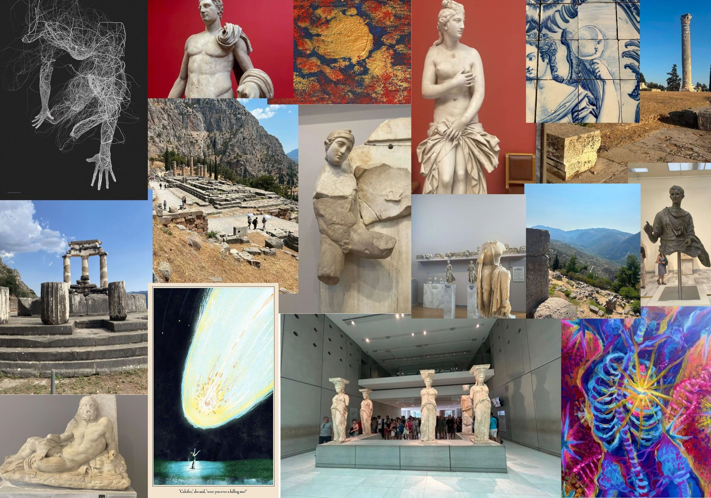
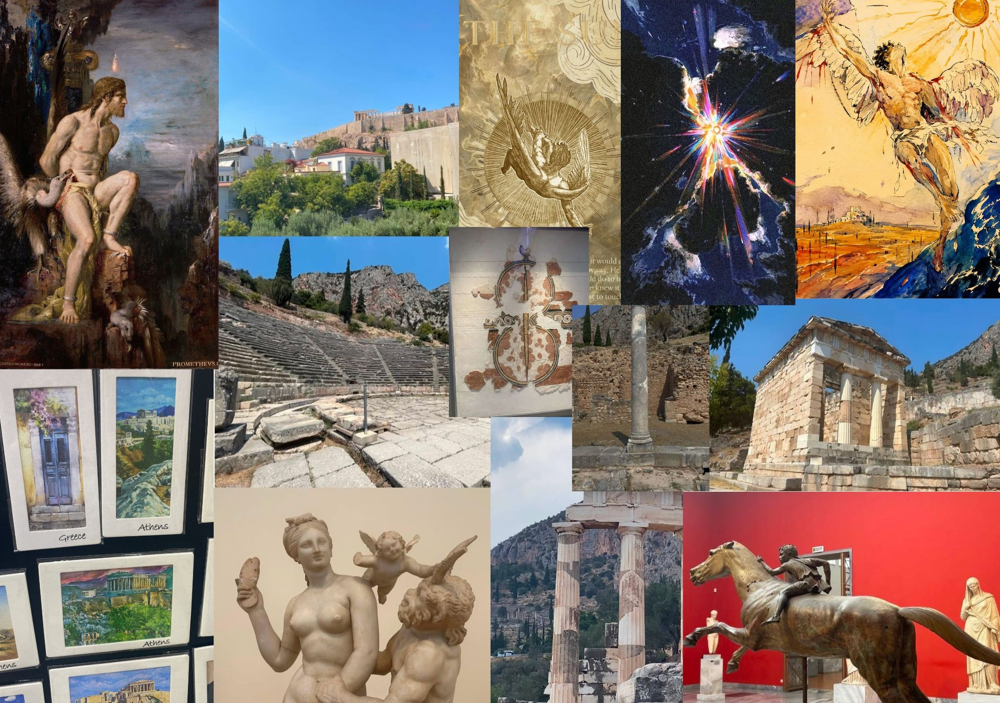

class: center, middle <!-- In deze textarea kan je in Markdown de slides aanpassen, zie https://github.com/gnab/remark/wiki voor alle mogelijkheden! --> # Het ontkiemen van de Digital Garden Inspiratie, 'vibes' & voorbeelden --- # Agenda 1. Wat gaat er in de Garden? 2. Research 3. Inspiratie bord 4. Wat wil ik vertellen 5. Introtekst --- # Wat gaat er in de Garden? Griekse mythologie. Mensen hebben altijd alles wat ze ervaren willen verklaren, en ik vind dat (Griekse) mythologie hier onderdeel van is. <img src="img/Aphrodite.jpg" alt="Foto van een standbeeld van Aphrodite" width="15%" height="30%"> Als kind had ik korte verhalen gehoord en foto’s van verschillende standbeelden gezien, alles wat mijn interesse alleen maar vergroot had. Ik wil graag mijn eigen interpretaties in mijn Garden planten. Verder zou ik willen kijken hoe de moderne wereld naar de oude wereld kijkt en wat voor een rol Griekse mythologie hierin speelt. Het toevoegen van kopjes over verschillende kopjes lijkt mij een must. --- # Research Griekse mythologie was een polytheïstisch geloof, waar men in meerdere goden geloofden. Het had geen heilig boek of een specifieke manier om te leven, en men dacht dat de goden simpelweg mensen met speciale krachten waren. Het was eerder een verklaring voor het leven. Er waren dan ook enorm veel verhalen, als je niet weet wat bliksem is en hoe dit ontstaat, dan is een boze meneer die het naar beneden gooit je eerste optie. Zie elk god als een eigen boek binnenin 1 serie. Het is niet simpelweg een verhaal wat na 1 pagina eindigt, er zijn meerdere verhalen rondom de goden gebouwd. Hiervan zijn meerdere versies verspreid, met invloed van regio en de spreker. Het is relevant tot de dag van vandaag omdat dit verklaringen zijn voor ervaringen die wij altijd wel zullen hebben. Over de afgelopen jaren zijn er ook meerdere kunstwerken, merken en media geïnspireerd op deze verhalen. --- # Inspiratie bord <p></p> --- # <p></p> --- # <p></p> --- # Wat wil ik vertellen? Ik zou het graag willen hebben over de menselijke aspecten, waarom waren deze verhalen nodig en hoe helpt het ons vandaag. Ook zou ik het over specifieke goden willen hebben, met mijn eigen interpretaties van hen. Ik zou dan een verzameling willen maken van tekst en beeld waaruit ik mijn eigen conclusies trek. Ik wil eigenlijk constant praten over dat wat ik leuk vind. Een archief maar dan met mijn mening. --- # Introtekst Een kijkje nemen binnenin de oude Griekse mythologie is het openen van Pandora’s box. Alleen zal je een wereld van cultuur en gevoel beleven en niet een tweede plaag loslaten. Griekse mythologie is een geloof met meerdere goden, goden voor vrijwel alles. Van Helios -god van de zon- tot ‘Agnostos Theos’ wie ook wel de ‘god van alles’ wordt genoemd. Dit was voor alle goden die wel bestonden, maar geen naam hadden. ‘Verklaringen van ervaringen’ noem ik het, we zien dingen die we niet begrijpen en daar kunnen we niet zo goed tegen. In dat tijdperk zijn er veel dingen die we niet eerder hebben gezien, en geen google hebben om op te zoeken. Ik vind het dan ook een reflectie van menselijk gedrag, en is vergelijkbaar met moderne religie. Ik kan niet begrijpen hoe wij op een grote bal ronddraaien dus draai ik naar een god, het onbekende verklaart het onbekende. Het blijven wel mythes, waar interpretatie een grote rol speelt. Dat is zo met elke vorm van media, maar hou hier een open houding voor. Alles is alleged. --- <!-- Laat onderstaande staan anders breekt je presentatie -->